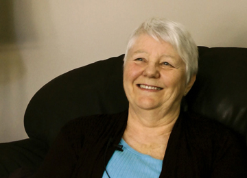

First symptoms
First symptomsTina

Age: 66 years old
Time since first diagnosis: 3 years
Her background:
Tina (66 years old), is married and has 5 adult children. She was on CPP disability for other reasons when she was diagnosed.
Tina was diagnosed in 2012 and is currently in remission. She found a lump in her breast and initially thought it was a fibrous cyst as she had had them before. She stopped drinking coffee to see if the lump would disappear. After two months Tina decided to see a doctor. She was then sent for a mammography, ultrasound and biopsy. Tina knew deep inside it would be breast cancer and did not feel upset when the doctor gave her the diagnosis. After intensive discussion with the surgeon, she decided that she would rather have a double mastectomy and radiotherapy. Tina declined the proposed chemotherapy as she did not think she would be able to undergo and tolerate the therapy given her own health status. Tina also tried hormones for two months but stopped as she was feeling too ill. The oncologist stopped seeing her at that point as her formal treatment had ended. It was suggested that she continue the mammography but she had difficulty understanding the purpose of a mammography after a double mastectomy, where there was hardly any skin left to screen. Tina is now monitored regularly by her surgeon. Tina explained how she was accepting of the diagnosis straight from the beginning and how she feels it is important that everybody makes her own personal decisions with regards to the proposed treatments.